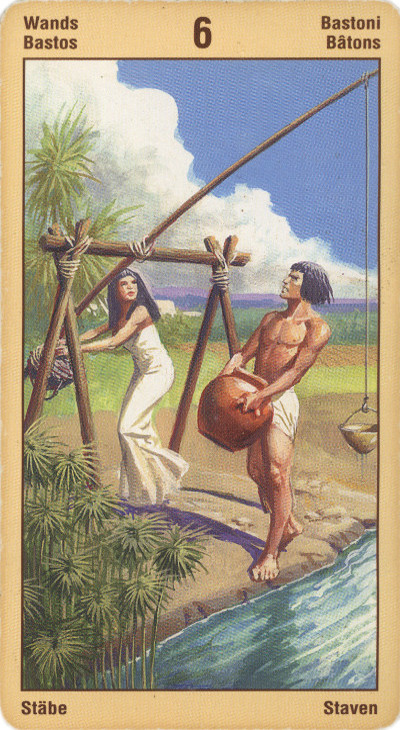

Шестёрка Жезлов
На практике эта карта означает успех сверх всяких ожиданий.
Данная карта нередко означает победу или успех, полученную благодаря нашим собственным усилиям. Этот успех может включать общественное признание или даже славу. Не исключено, что вы добились его, проявив себя умелым лидером, в результате чего ваши действия принесли пользу не только вам, но и другим. Какие бы похвалы и награды вы ни получали, они представляют собой результат вашей способности вдохновлять других, возможно, что вскоре вас попросят взять на себя роль лидера или же что вы сами к этому стремитесь, не исключено, что это уже произошло.
Она также может означать создание Благоприятной атмосферы сотрудничества и гармонии в семье, где все работают над достижением общих целей. Эта карта также может означать успешную юридическую сделку или операцию с материальными ценностями.
Шестерка Жезлов - это карта победы, успеха, славы и "всенародного признания", а от сюда и радости, удовлетворения. Если быть совсем точным, то она представляет собой обнародование успеха, провозглашение победы. Так что в обыденной жизни она может означать и просто хорошую новость, безо всякой помпы и парада. Как правило, эта карта показывает, что наш труд и наши усилия увенчаются успехом. Иногда это бывает и неожиданный "незаслуженный" успех.
Состояние триумфа достижимо в том случае, если тобой руководили высшие стремления. Уважение к культурным достижениям и традициям развивает внутреннее благородство и соединяет цель человека с задачами других людей, которые при этом, естественно, становятся его помощниками.
Удача и власть над другими может давать человеку чрезмерную гордость. Его чувство превосходства может раздражать других людей, превращая их из потенциальных друзей во врагов - возвращая этим человека к задаче развития самосознания.
Более внимательное отношение человека к слабым сторонам жизни, напротив, открывает путь к дальнейшим высотам, помогая стать проводником духовных энергий и укрепляя его внутреннюю власть над собой, которая является основой внешнего лидерства.
В перевернутом виде она сохраняет свое значение; только успех может прийти позже, чем ожидалось – или же он достанется не вам.
Не исключено, что вам не хватает веры в себя и в свои силы для того, чтобы двигать свои планы вперед, может быть, вас одолевают пораженческие чувства и настроения. Также вы можете страдать от высокомерия и гордыни, из-за которых портятся отношения на работе. Кроме того, Шестерка Посохов может указывать на конфликт или предательство, которые выражаются в той или иной форме и касаются либо работы, либо финансовой сферы.
Карта может также символизировать легкое любовное увлечение, курортный роман.